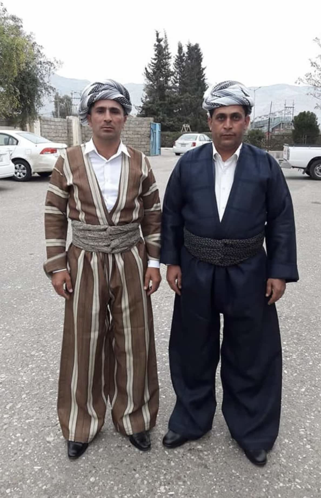
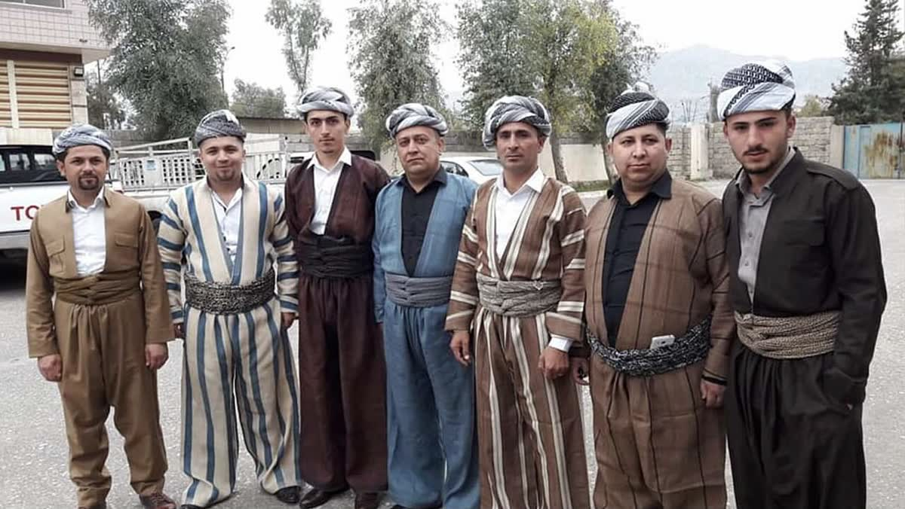
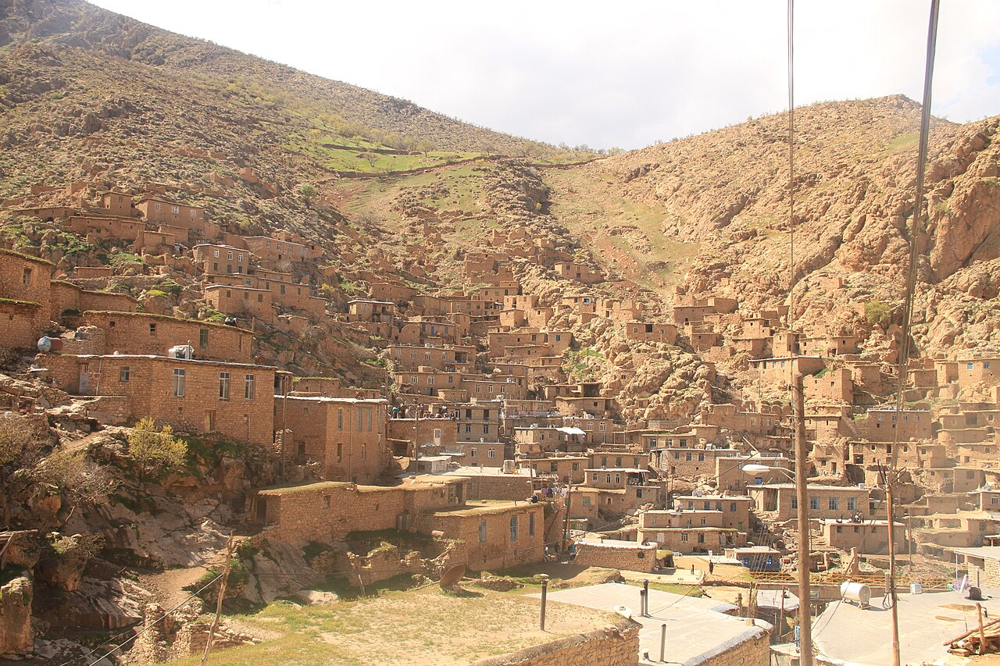

Kapak — Fotoğraf: Cristo Cardoc · CC BY 4.0 · KaynaklarŞal û şepik, Kürt kültüründe erkek giyiminin en köklü ve en bilinen örneklerinden biridir. Adını, takımı oluşturan iki ana parçadan alır: bol kesimli pantolonu ifade eden şal ve ceket anlamına gelen şepik. Bu ikiliyi tamamlayan şûtik adlı kuşakla birlikte ortaya, günlük yaşamdan düğünlere kadar pek çok ortamda giyilen bütünlüklü bir kıyafet çıkar.
Bu rehberde şal û şepik takımının parçalarını, kullanılan tiftik ve yün dokuma kumaşı, yaygın renkleri, özel günlerde nasıl kombinlenebileceğini ve uzun ömürlü olması için nasıl bakım yapılması gerektiğini adım adım ele alıyoruz.
Şal û Şepik Nedir?
Şal û şepik, aynı kumaştan dokunan pantolon ve ceketten oluşan geleneksel bir erkek takımıdır. Takımın biçiminin, bölgenin iklim koşullarına ve hayvancılığa dayalı yaşam tarzına göre şekillendiği kabul edilir. Keçi tiftiği ve koyun yününden eğrilen iplikler, hem sıcak tutan hem de yıllarca dayanan bir kumaş ortaya çıkarır. Kuşaktan kuşağa aktarılan dokuma bilgisiyle üretilen takım, bugün de büyük ölçüde el emeğiyle hazırlanır ve bu yönüyle yaşayan bir zanaat geleneğini temsil eder.
Takımın Parçaları
Şepik: Takımın Ceketi
Şepik, takımın üst parçasını oluşturan kısa kesimli cekettir. Genellikle yakasız ya da dar yakalı dikilir; bedeni saran ancak hareketi kısıtlamayan bir kalıbı vardır. Önü çoğunlukla açık bırakılır ve içe giyilen gömleği görünür kılar. Kol ve omuz dikişlerindeki işçilik, ustadan ustaya değişen ince ayrıntılar taşır.
Şal: Bol Kesimli Pantolon
Şal, beli uçkurlu ya da büzgülü, paçaya doğru toparlanan bol kesimli bir pantolondur. Geniş kalıbı sayesinde otururken, yürürken ve çalışırken yüksek hareket özgürlüğü sağlar. Bu rahatlığın, engebeli coğrafyada günlük yaşamın ihtiyaçlarına yanıt olarak geliştiği aktarılır.
Şûtik: Beli Saran Kuşak
Şûtik, belin etrafına birkaç kez dolanan uzun kuşaktır. Takıma görsel bütünlük katmasının yanı sıra beli destekleme işlevi de görür. Genellikle desenli ya da takımla kontrast oluşturan renklerde tercih edilir. Şûtik ve benzeri tamamlayıcı parçaları aksesuar sayfamızda inceleyebilirsiniz.
Tiftik ve Yün Dokuma: Dayanıklılığın Sırrı
Şal û şepik kumaşının en değerli hammaddesi tiftiktir. Tiftik keçisinin parlak ve sağlam lifleri, çoğu zaman koyun yünüyle harmanlanarak elde eğrilir ve geleneksel tezgâhlarda dokunur. Doğal lifli bu kumaşın nefes aldığı, kışın sıcak yazın ise serin tuttuğu bilinir. Sık dokusu sayesinde kolay yıpranmaz; doğru bakım yapıldığında bir takımın kuşaklar boyunca kullanılabildiği aktarılır. Kumaş yüzeyindeki ince çizgili ya da balıksırtı dokular ise el dokumasının karakteristik izleridir.
Hangi Renkler Yaygındır?
Geleneksel üretimde doğal lif renkleri ve yöresel boyama alışkanlıkları belirleyicidir. En sık karşılaşılan tonlar şunlardır:
- Krem ve bej: Doğal tiftik renginin en saf hali; özellikle yazlık ve özel gün takımlarında tercih edilir.
- Kahverengi tonları: Günlük kullanım için yaygın ve gösterişsiz bir seçenektir.
- Gri ve füme: Modern kombinlere de kolay uyum sağlayan dengeli tonlardır.
- Lacivert ve koyu mavi: Düğün ve tören giyiminde sıkça görülür.
- Haki ve yeşil tonları: Kimi yörelerde öne çıkan karakteristik renklerdir.
Renk ve desen tercihleri yöreden yöreye farklılaşır; kimi bölgelerde düz kumaşlar, kimilerinde ince çizgili ya da balıksırtı desenli dokumalar öne çıkar.
Düğün ve Özel Günlerde Nasıl Kombinlenir?
Düğün, nişan ve bayram gibi özel günlerde şal û şepik genellikle şu şekilde kombinlenir:
- Koyu renkli takımın altına açık renk, sade bir gömlek giyilir.
- Bele, takımla kontrast oluşturan desenli bir şûtik sarılır.
- Omuza atılan ya da boyna dolanan bir puşi kombini tamamlar.
- Ayakkabıda sade ve koyu renkli modeller tercih edilir.
Aile fotoğraflarında ve düğün alaylarında bütünlüklü bir görünüm isteyenler için kadın giyiminde geleneksel kirasfistan ile kurulan renk uyumu, sık başvurulan bir tercihtir. Damat ve sağdıç takımlarının aynı tonlarda, ancak farklı desenli şûtiklerle ayrıştırılması da yaygın bir uygulamadır.
Şal û Şepik Alırken Nelere Dikkat Edilmeli?
İyi bir takım seçmek için önce kumaşı elinize alın: gerçek tiftik ve yün dokuma, hafif pürüzlü ama sıcak bir dokunuş bırakır ve ışıkta yumuşak bir parlaklık gösterir. Dikişlerin düzgünlüğü, kuşağın uzunluğu ve pantolon kalıbının bedene uygunluğu da en az kumaş kadar önemlidir.
- Kumaşın el dokuması olup olmadığını ve lif içeriğini satıcıya sorun.
- Şepiğin omuz oturuşunu ve kol boyunu mutlaka deneyerek kontrol edin.
- Şalın bel ve ağ genişliğinin rahat hareket etmeye izin verdiğinden emin olun.
- Şûtiğin belinize en az iki üç kez dolanacak uzunlukta olmasına dikkat edin.
Bakım Önerileri
Tiftik ve yün dokuma kumaş, doğru bakıldığında yıllarca ilk günkü görünümünü korur:
- Takımı soğuk ya da ılık suda, yün için üretilmiş deterjanla elde yıkayın.
- Kumaşı bükerek sıkmayın; fazla suyu temiz bir havluyla alın.
- Doğrudan güneş yerine gölgede ve düz bir zemine sererek kurutun.
- Ütü gerekiyorsa düşük ısıda ve kumaşın üzerine ince bir bez koyarak uygulayın.
- Dolapta bez bir torba içinde saklayın; güvelere karşı lavanta kesesi bulundurun.
Unutmayın: El dokuması bir şal û şepik, özenli bakımla yalnızca bir kıyafet olmaktan çıkar; sonraki kuşaklara devredilen bir aile yadigârına dönüşür.
Modelleri yakından incelemek için şal û şepik koleksiyonumuza göz atabilir, beden ve teslimat gibi merak ettikleriniz için sık sorulan sorular sayfamızı ziyaret edebilirsiniz.
Kültürden Kareler

